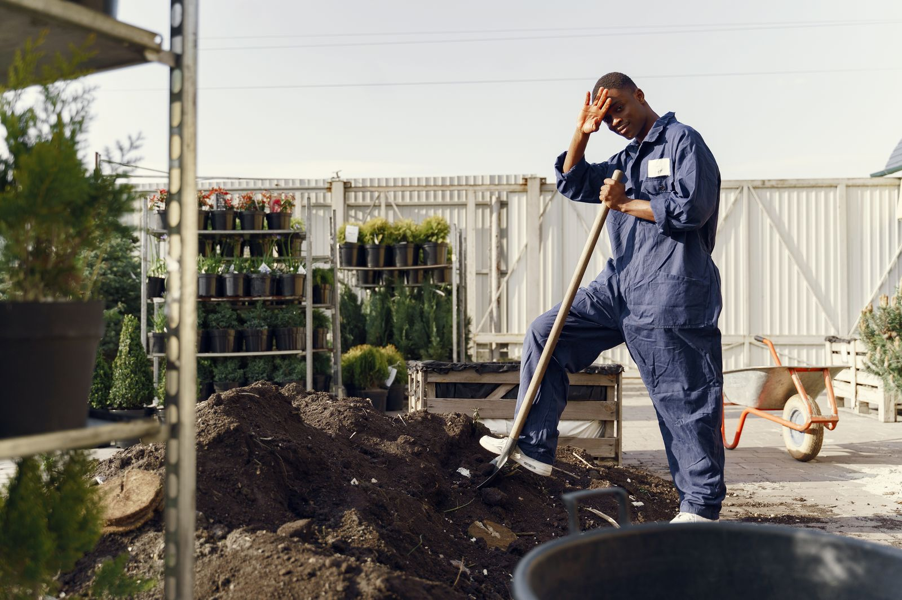

Sheet 03 · The practice
Gardener first. Architect second. In that order.
Celia Marchetti spent six years as a working gardener — maintaining other people's finished schemes, in other people's weather — before qualifying as a landscape architect. The practice she founded in Bath in 2016 designs the way maintenance teaches you to: from the soil up, and from the caretaker's hours backwards.
The story
Six years with a fork before a single drawing.
The maintenance years are the education this practice is built on. Keeping a courtyard alive through a dry July teaches you more about planting design than any rendering suite: which drifts collapse without staking, which groundcovers actually knit, how a scheme's third year is decided by decisions nobody photographed in its first.
Qualification followed — a master's in landscape architecture, chartered membership of the Landscape Institute — and then a deliberate choice of work: planted buildings. Courtyards, hospital gardens, workplace landscapes, residential schemes. Places where architecture has already happened and ecology is invited in afterwards, on honest terms.
The practice stays small on purpose: one architect, a horticulturist on retainer, and a short list of planting contractors trusted over a decade. Every scheme is supervised through its establishment year by the person who drew it.
“I will not draw a garden nobody has the hours to keep. A beautiful scheme that dies in year two is not design — it is littering, with better graphics.”

The working page
How a scheme runs.
Survey
The site is measured and read: aspect, shade across the year, access, existing trees and what they are worth keeping. The caretaker conversation happens here, not at the end — hours, skills and budget for care are surveyed like soil.
Soil & water first
Soil is tested and, where needed, rebuilt — structure, depth, organic matter — before any planting is specified. Water is audited: rainfall, runoff, storage. A scheme that cannot be watered in its first season is redesigned before it is planted, not rescued after.
The planting plan
Drawn in classes with densities from Table P1, with the loss allowance printed on the plan itself. Three documents are issued together: the plan, the planting schedule, and the maintenance plan. All three are signed before a single plant is ordered.
The establishment year
Twelve months of monthly supervision visits: watering audited, losses counted against the allowance, replacements set out in season. The year closes with a written establishment report — the document the case files on Sheet 02 are drawn from.
The honesty page
A render is a promise a plant has to keep.
Visualisations in this practice are labelled what they are. A render is marked render; a photograph is marked photograph, with its year. The two are never blended, and a render is never captioned as if the garden existed. Plants do not read renders — they read soil, water and weather, and they keep only the promises those allow.
Ecological claims are kept measurable or left unmade. Canopy cover is a percentage from a grid-point survey. Nativeness is a count of species. Runoff is a figure from the water audit. If a benefit cannot be counted, it is described as an intention, not an achievement — the word for the other practice is greenwashing, and it is not used here in either sense.
Losses are part of the record, not an embarrassment edited out of it. Every scheme's year-one losses are counted, reported to the client in writing, and replaced inside the printed allowance. Where a failure is the practice's fault — an under-specified detail, a misjudged exposure — the replacement is the practice's cost, and the case file says so. See Case File 3.
| Term | The basis, as contracted |
|---|---|
| Establishment period | 12 months from planting, with monthly supervision visits (Table F1, Sheet 01). |
| Loss allowance | Printed on the planting plan before planting begins, by class, from Table P1. |
| Replacements | Losses within the allowance are replaced free in year one, in the next planting season. Losses beyond the allowance are reported with their cause before any replanting is priced. |
| Practice-fault failures | Where a failure traces to the practice's specification, replacement is at the practice's cost, in or out of allowance. |
| Maintenance plan | Signed by the client or their contractor before planting. No signature, no planting — the scheme is redesigned to fit the hours that can be signed for. |
| Fees | Design-side fees on Table F1. Plants and planting works are contracted separately and priced from the planting schedule. |
Terms summarised for this page; the full engagement letter is issued with every commission.
The terms are the design.
If the establishment basis above sounds like the way you'd want a scheme run, the enquiry sheet is short and the first conversation is free.
Enquire — Sheet 04